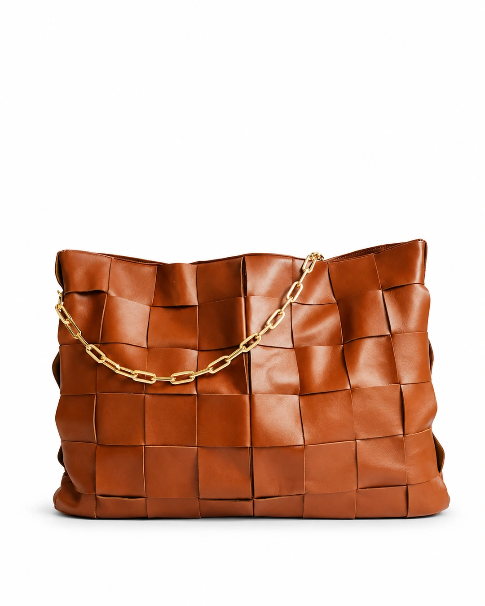

Original not availableThis work was made before originals were kept with the work. The result stays.
Public · watermark
Developing
Not developed
Standard · 1024
Illustrative example
The edit is developing over the original.
The original is untouched.
Pure White
- Request sent
- Generating46%
Usually 20–40 seconds. You can leave this page: the new photo lands in Photos when it's done.
The edit failed. Your credits were refunded.
Your request is kept. Try again, or change what you asked for.
Your noteKeep the chain gold, soften the shadow
- Template
- Pure White
- Size
- Post 4:5
- Resolution
- Standard · 1024 px
- Format
- PNG, transparent background
- Credits
- 2 credits
- Visibility
- Public, with watermark
- Original
- Kept with this photo
- Made
- Today, 14:05
Edits make a new photo, with the same size and framing. The original stays in Photos.